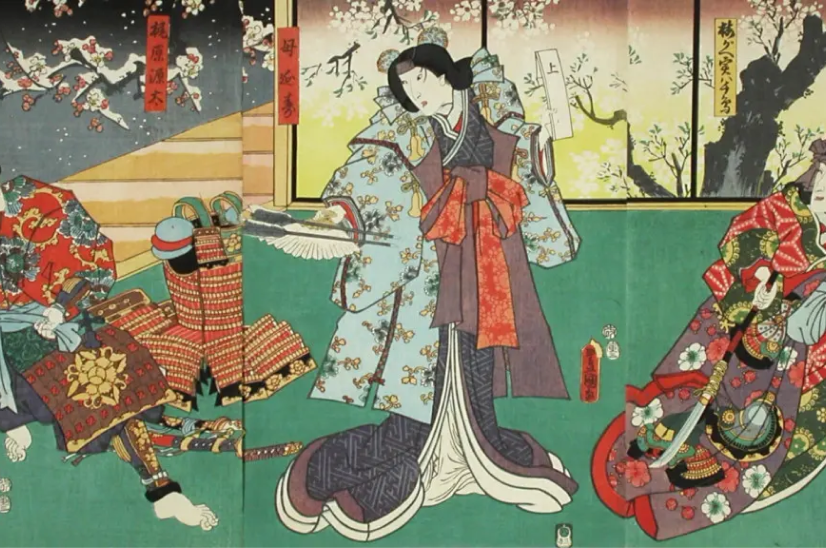
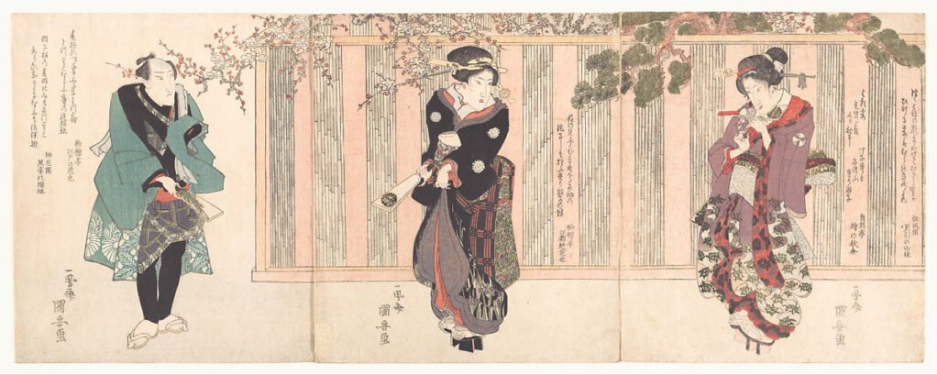
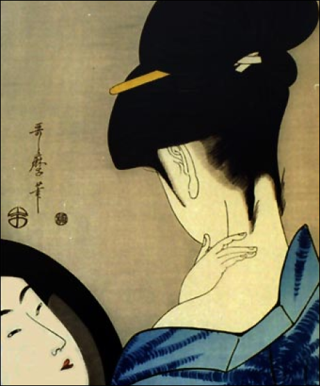

-
芸術運動
Movimiento
アーティスト
Artistas
芸術作品
Obras
技術
Técnica
店
Tienda
Home
PINTURAS DEL MUNDO FLOTANTE
浮遊世界の絵画
東洲斎写楽
浮遊世界の絵画
菱川師宣
Bienvenidos al mundo flotante Navega por nuestra extensa colección de grabados Ukiyo-e, donde encontrarás paisajes, retratos, escenas de la vida cotidiana y representaciones de mitos y leyendas. Cada imagen es una ventana a un Japón pasado, revelando la cultura, las costumbres y las creencias de la época.
Celebra la vida efímera y los placeres terrenales aceptando la fugacidad de la existencia y búsqueda de la belleza en lo momentáneo
El Ukiyo-e nace durante el período Edo en Japón como respuesta a la monotonía de la vida, buscando la evasión y el placer en el "mundo flotante". Fue una época de aislamiento y auge cultural en Japón.
¿QUÉ ENCONTRARÁS?

Chijō no
Shunkan-tekina

瞬間的な
EFÍMERO Y TERRENAL

儚くて地上的な
地上の